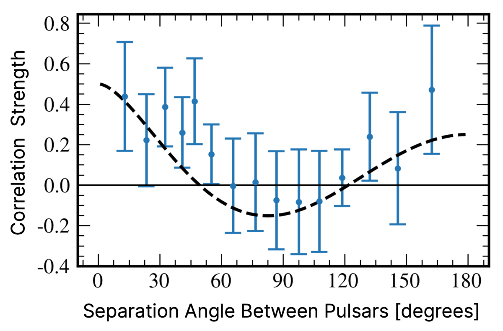
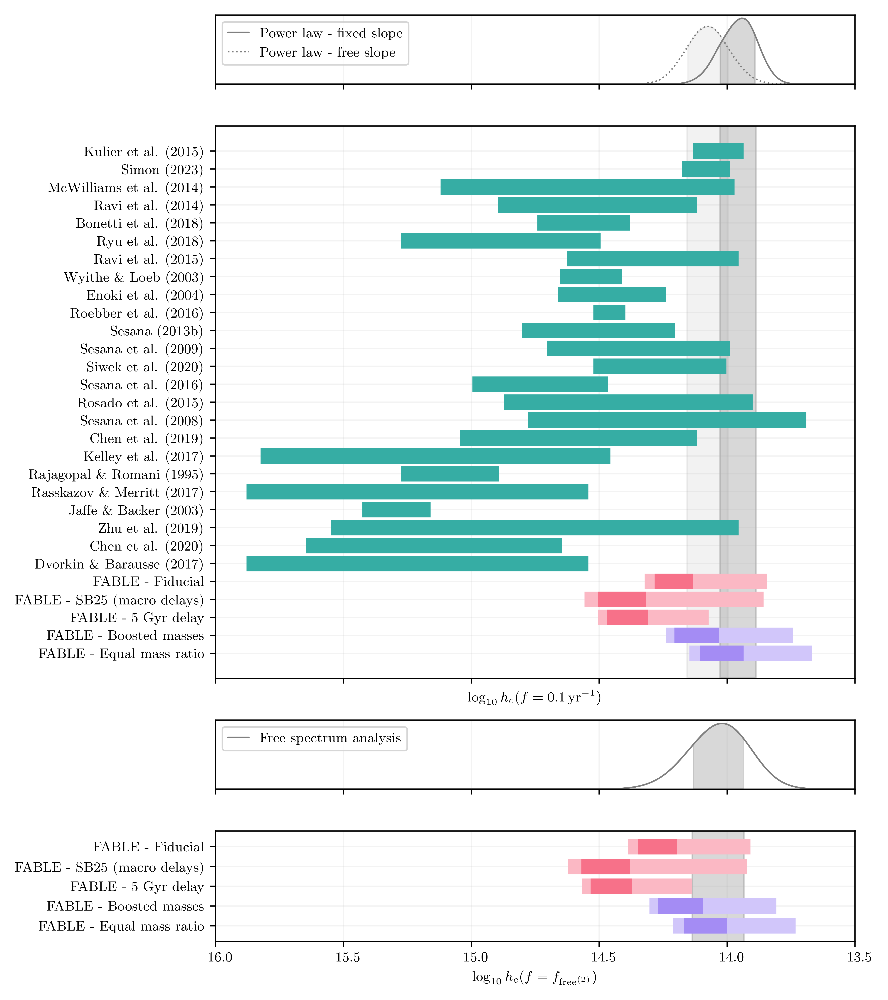
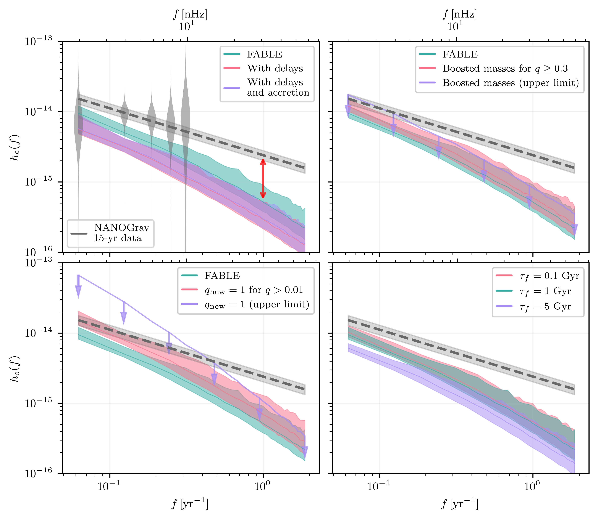

Comparing gravitational wave background predictions from cosmological simulations to pulsar timing observations
Authors: Stephanie Buttigieg, Debora Sijacki, Christopher J. Moore, Martin A. Bourne and Alberto Sesana
The gravitational wave background and pulsar timing arrays
In 2023, several pulsar timing array (PTA) collaborations announced a tentative detection of a stochastic gravitational wave background (GWB). The main source of this background is expected to be a population of merging supermassive black holes (SMBHs). These black holes, with masses ranging from millions to billions of times the mass of our Sun, reside at the centres of galaxies and form binaries when two galaxies merge. As they slowly spiral towards one another, they emit gravitational waves; ripples in the fabric of spacetime. The combined signal from a population of these binaries across the Universe blends together to produce a constant, low-frequency gravitational wave "hum".
Pulsars, first discovered by Dame Jocelyn Bell Burnell in 1967, rotate at an incredibly regular rate and can therefore be used as precise cosmic clocks. By measuring the arrival times of pulses from an array of these objects, astronomers can search for tiny deviations caused by passing gravitational waves. When a gravitational wave travels between a pulsar and Earth, the pulses arrive ever so slightly earlier or later than expected. By monitoring dozens of pulsars spread across the sky, collaborations such as the European Pulsar Timing Array and NANOGrav have detected the distinctive correlated signal, shown in Figure 1, expected from a gravitational wave background, providing the strongest evidence yet for these gravitational waves at nanohertz frequencies.
The strength of this background depends on many different aspects of the supermassive black hole population. It is influenced by how many black holes exist in the Universe, how massive they are, how quickly they merge after their host galaxies collide, and how similar the masses of the two black holes are within each binary. Interestingly, many theoretical predictions made before the PTA detections suggested a weaker background than the one now observed, raising an important question: are our models of the supermassive black hole population missing something?

Comparing predictions to observations
In this work, we present the first statistical framework designed to quantify the difference, or "tension", between theoretical predictions and PTA observations. We apply this framework to predictions from the FABLE cosmological simulation, which self-consistently follows the formation and evolution of galaxies and their central black holes throughout the history of the Universe. Although the predicted gravitational wave background lies somewhat below the observed signal, our statistical analysis shows that the difference is less than about 2.5 standard deviations. In other words, despite appearances, there is currently no significant disagreement between the simulation and the observations.
Figure 2 illustrates this comparison. Many theoretical models predict amplitudes below the observed gravitational wave background, including the fiducial prediction from the FABLE simulation. However, simply comparing the central values can give a misleading impression. Both the observations and the theoretical predictions carry significant uncertainties, and once these are properly accounted for, the apparent discrepancy becomes much less significant. Our work demonstrates that the current observations are still fully compatible with predictions from modern cosmological simulations.

Astrophysical modifications to the BH merger population
Nevertheless, we also explored whether physically motivated changes to the black hole population could naturally increase the predicted signal. Recent observations with the James Webb Space Telescope have revealed surprisingly massive black holes in the early Universe, suggesting that black holes may have grown more rapidly than previously thought. At the same time, theoretical studies indicate that black holes within a binary may become more similar in mass as they evolve towards merger by preferentially accreting gas onto the smaller companion.
As shown in Figure 2 and Figure 3, both of these effects increase the predicted gravitational wave background. If black holes were systematically more massive at earlier cosmic times, or if merging binaries tended to have more equal masses, the resulting gravitational wave signal becomes stronger and moves into even better agreement with the PTA observations. These are not arbitrary modifications, but astrophysically motivated scenarios that remain broadly consistent with current electromagnetic observations while highlighting the considerable uncertainty that still exists in our understanding of black hole evolution.

The role of the most massive black holes
We also investigated the role of the most massive black holes in the Universe. These extraordinary objects, weighing more than ten billion times the mass of the Sun, are exceptionally rare and therefore difficult to capture even in the largest cosmological simulations. They are also surprisingly difficult to detect with conventional telescopes. Many may no longer be actively accreting gas, making them almost invisible electromagnetically despite their enormous masses.
Despite their rarity, these ultra-massive black holes could have an important impact on the gravitational wave background. Because gravitational wave emission increases rapidly with black hole mass, even a small number of these extreme systems could contribute significantly to the signal measured by pulsar timing arrays. This makes gravitational waves a unique probe of a population of black holes that may otherwise remain hidden from view.
As pulsar timing arrays continue to collect data over the coming years, the measurements of the gravitational wave background will become increasingly precise. Combined with improved cosmological simulations and new observations from facilities such as the James Webb Space Telescope, these measurements will allow us to place increasingly stringent constraints on how supermassive black holes grow, interact and merge across cosmic time. Rather than revealing statistical tension between theory and observation, our results suggest that we are entering an exciting era in which gravitational waves are becoming a powerful new tool for understanding the evolution of the Universe's largest black holes.
Do you have any questions? Contact me for more details!